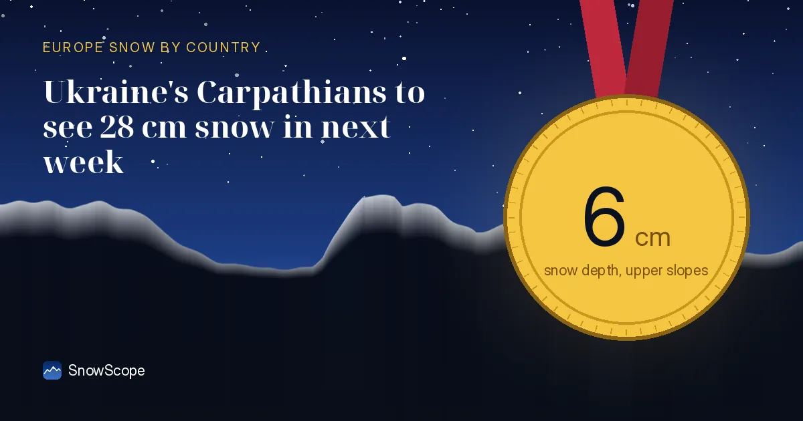

Ukraine's Carpathians to see 28 cm snow in next week
A significant snow event is moving toward Ukraine's Carpathian Mountains. The week ahead will bring up to 28 cm of new snow, with the heaviest falls on November 21st.
See the live snow forecast for Драгобрат in the SnowScope appSnow depth, powder alerts and the 3D map, free.
What is coming
Our snow model shows that Ukraine will experience substantial snowfall in the coming days. Over the next 3 days, the mountains can expect up to 24 cm of new snow. This will increase to 28 cm by day 7. The peak snowfall is forecast for November 21st, when 8 cm is likely to fall across the region.
At present, only 370 square kilometres of the modelled area holds snow. This is a thin coverage. The snow line sits at 1500 metres, so lower slopes remain bare. The incoming storm will change this significantly, especially above 1500 metres where snow depths are already around 3 cm.
| Resort | Snow depth | New snow, 72 h | Coming, next days | Top |
|---|---|---|---|---|
| Драгобрат | 6 cm | 12 cm | 24 cm | 1,706 m |
| Pylypets | 2 cm | 4 cm | 8 cm | 1,165 m |
| Буковель | 1 cm | 2 cm | 10 cm | 1,370 m |

Where the best snow will be
Chornohora is leading the way with 13 cm of new snow in the last 72 hours. This ridge will capture the most of the incoming system. The Borzhava ridge follows close behind with 12 cm already fallen, and the Gorgany has seen 9 cm. These high ridges, running above 1500 metres, will be the primary targets as the storm approaches.
Драгобрат sits at 1706 metres and holds 6 cm at present. Over the next 3 days it should gain 24 cm, making it the best-positioned resort for November 21st. Pylypets, at 1165 metres, is lower and will see less snow. Буковель faces a similar challenge at 1370 metres, though both will benefit when fresh snow reaches their peaks.

The snow bands today
Below 1000 metres, the mountains are bare. Between 1000 and 1500 metres, only 4 percent of the area has snow. It is at 1500 to 2000 metres where conditions begin to improve. Here, 68 percent of the terrain is covered by an average of 3 cm. This is thin, and rocks may show through in many places.
The incoming snow will fill these gaps. By November 21st and the days following, coverage will spread downward as temperatures drop and the system intensifies. The highest peaks will be the safest early, as fresh snow at lower elevations may expose rocks or become patchy.
What happened this week
The past week has been dramatic and uncertain. Last Sunday, November 16th, 1650 square kilometres held snow across the mountains. By yesterday it had fallen to 430 square kilometres. Today it stands at 370 square kilometres. The snow line has retreated upward and the region has lost significant coverage. Warm air and perhaps rain have wiped away much of the early season snow.
Драгобрат and Pylypets have been trading places as the leaders. As of today, Драгобрат holds 6 cm at its peak, with Pylypets at 2 cm. This volatility reflects the warm, unsettled pattern. The incoming system is expected to stabilize snow levels and push them higher into the week.
Beyond the next 7 days
The outlook becomes quieter after the November 21st event. The second week ahead, from November 27th to December 3rd, shows only 4 cm of new snow. This is a sharp drop from what is coming now. It suggests that this system is the main chance for significant accumulation in the near term. After it passes, conditions may become dry again.
Practical advice for skiers
If you plan to ski in the mountains, the November 21st date and the 3 days following are your window. Драгобрат will gain the most snow of any resort. Stay above 1500 metres where the new snow will be deepest. Lower slopes at Pylypets and Буковель will be patchy and risky. Watch the official avalanche bulletin if you venture off-piste, especially on steep slopes receiving the fresh snow. Rocky terrain is still common below 1500 metres, so plan your line carefully.
Tips for skiers
- Target Драгобрат or the high ridges (Chornohora, Borzhava) on November 21st and immediately after for the deepest new snow.
- Stay above 1500 metres where the new powder will accumulate thickest and rocks are less likely to be exposed.
- Avoid lower resorts like Pylypets and Буковель in the first 72 hours; they will receive less snow and terrain remains rocky.
- Consult the official avalanche bulletin before skiing off-piste; fresh snow on steep slopes carries risk.
- Be ready early: the quieter week that follows means this event is your best chance for good skiing conditions in the coming weeks.
About these numbers
Resort snow depths are the deepest snow on the resort's upper slopes from the SnowScope snow model (about 1 km, run of 19 November); they are estimates for an area, not a measurement at one point. Station values are measurements on the date shown. Forecasts can change. Always read the official avalanche bulletin before going off-piste.
Cite this report
For research, teaching or the press: the numbers and charts are free to reuse under CC BY 4.0 with this citation.
SnowScope (2026), Ukraine's Carpathians to see 28 cm snow in next week, https://snowscope.app/blog/en/2026/11/ukraine-snow-on-the-way-19-november-2026.html, accessed 2026-11-19
SnowScope (Atlas Labs). (2026, November 19). Ukraine's Carpathians to see 28 cm snow in next week. SnowScope snow reports. https://snowscope.app/blog/en/2026/11/ukraine-snow-on-the-way-19-november-2026.html
BibTeX
@misc{snowscope2026ukrainesnowontheway19nov,
author = {{SnowScope (Atlas Labs)}},
title = {Ukraine's Carpathians to see 28 cm snow in next week},
year = {2026},
month = nov,
howpublished = {\url{https://snowscope.app/blog/en/2026/11/ukraine-snow-on-the-way-19-november-2026.html}},
note = {Published 2026-11-19 13:42 UTC; accessed 2026-11-19}
}· CC BY 4.0 · Methods, data and tools →
Драгобрат: snow and temperature by height, this winter vs last (tools) →
Follow Драгобрат
Free: a message when fresh snow is coming, and the forecast every morning.
More snow reports

From 20 EUR on an opening weekend to 6-day passes before Christmas: a calendar of the cheapest early-season ski deals in the Alps for 2026, with the snow you can expect.

Glacier skiing from 68 EUR a day: we compared seven glaciers in France, Austria, Germany and Switzerland by price and by the snow they usually hold in December.

Six days of skiing from 191 EUR: we ranked ten cheap ski weeks in Europe by price, then checked 46 past winters to see where the snow is reliable.